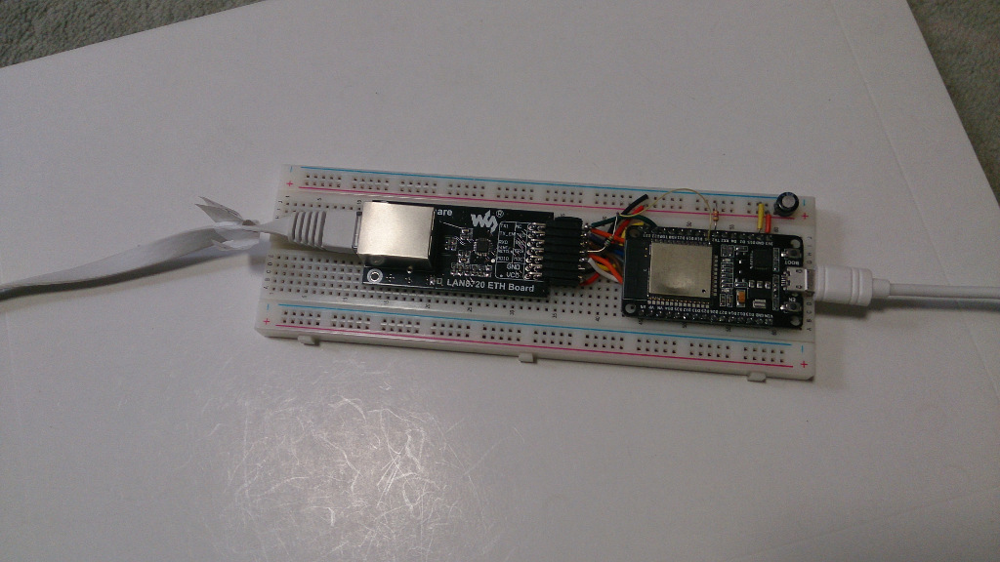

I'm making a simple esp32 board with ethernet. ESP32 has MAC and esp-idf supports PHYs like LAN87x0 and TLK110 already. Here is the schematic with KiCAD:

I'll create a git repository for that hardware if it works.
Update 2017-10-21
Now it works!

Revised KiCAD files for this board can be seen here as hardware/esp32-tlk110.
Also, I'm trying Waveshare LAN8720 module following https://sautter.com/blog/ethernet-on-esp32-using-lan8720/
It works well too, though this requires another few external parts and jumpers on the DOIT ESP32 board because IO0 is connected the boot switch directly on that board.